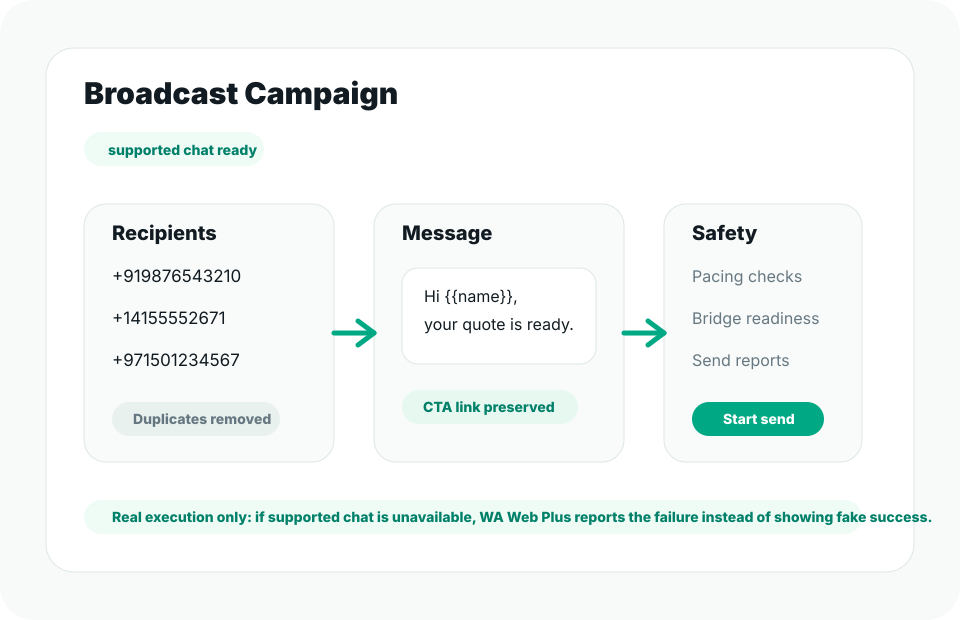

1. Open the chat tab
Go to web.whatsapp.com and open any conversation. The sidebar loads on the right. Toggle it with Ctrl+Shift+W.
Welcome
Open the web chat tab and the WA Web Utils sidebar appears. Do these three things in the next two minutes.

Welcome
Go to web.whatsapp.com and open any conversation. The sidebar loads on the right. Toggle it with Ctrl+Shift+W.
Open Settings, then Templates, and save the reply you type most. Insert it later by typing / in the message box.
In the sidebar, open Reminders on a live chat and pick when to follow up.
Add Lead, Customer or Follow-up tags so the top tabs can filter them.
Schedule a message for the right time instead of remembering.
Visit the support page or email support@wawebplus.com.
Ready
A quick rating on the Chrome Web Store helps other teams find us.